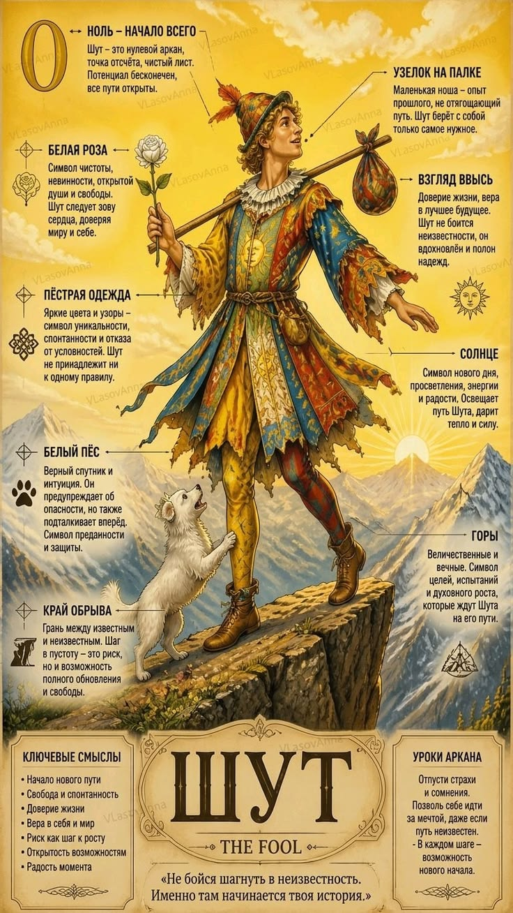

СЕРДЕЧНЫЕ ДЕЛА
22 Аркан в любви и отношениях
Отношения без жестких рамок и ревности. Партнеры должны оставаться свободными личностями. В плюсе — веселое, вдохновляющее приключение длиною в жизнь.

22 аркан — это энергия высшей духовной свободы, искренней радости бытия и смелости шагнуть в неизведанное с улыбкой на устах. Такие люди ломают любые стереотипы и доказывают: жизнь прекрасна в своей спонтанности.
Отношения без жестких рамок и ревности. Партнеры должны оставаться свободными личностями. В плюсе — веселое, вдохновляющее приключение длиною в жизнь.
Фриланс, юмор, стендап, путешествия, стартапы, креативные индустрии, анимация. Деньги приходят легко, когда нет зацикленности на накоплениях.
Живи играючи, доверяй пути и не бойся показаться смешным. Самые великие открытия всегда совершали те, кого поначалу считали безумцами.
ОТВЕТЫ НА ВОПРОСЫ
Да, в нумерологии Таро и Матрице Судьбы Шут обозначается как 22-й или нулевой аркан, завершающий и одновременно начинающий великий круг.
Учиться брать ответственность за свои поступки, сохраняя при этом детскую легкость и радость.
Введи дату своего рождения, и наш движок рассчитает все 10 арканов матрицы личности, кармический хвост и знак зодиака за секунду.